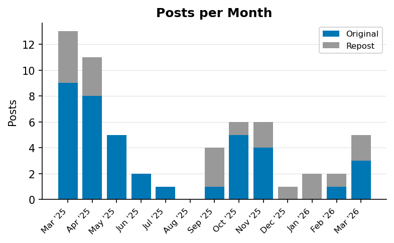
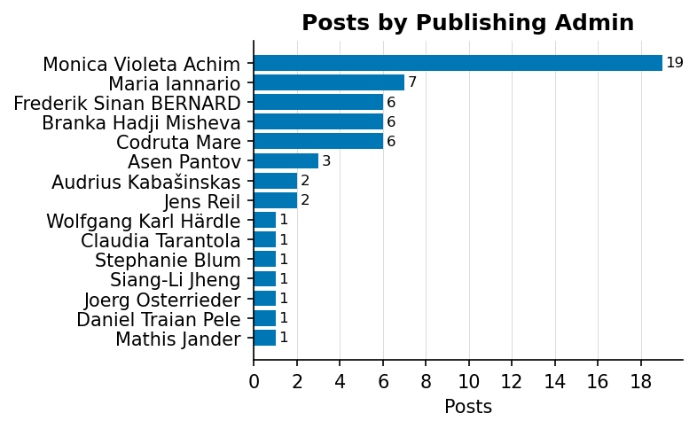
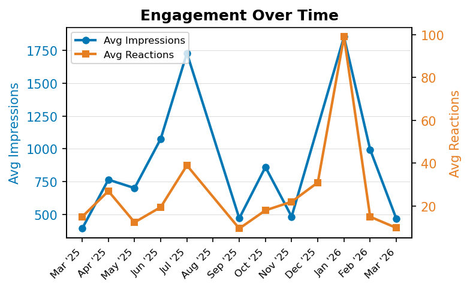
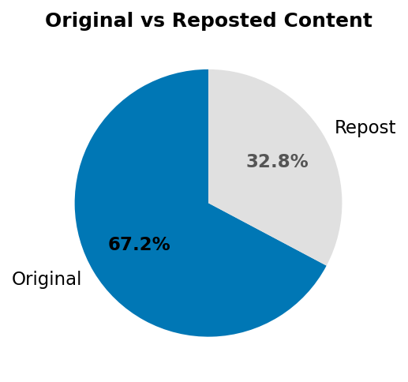

58
Total Posts
Mar 2025 – Mar 2026
Active Period
15
Contributing Admins
707
Avg Impressions per Post
Posts Timeline

Monthly posting activity showing the breakdown between original content and reposts.
Admin Breakdown

| Admin | Posts | Reposts | Avg Impressions | Avg Reactions |
|---|---|---|---|---|
| Monica Violeta Achim | 19 | 3 | 682 | 20.3 |
| Maria Iannario | 7 | 3 | 661 | 12.0 |
| Codruta Mare | 6 | 4 | 176 | 40.3 |
| Branka Hadji Misheva | 6 | 2 | 532 | 9.0 |
| Frederik Sinan BERNARD | 6 | 5 | 1,202 | 34.3 |
| Asen Pantov | 3 | 0 | 703 | 10.0 |
| Jens Reil | 2 | 0 | 666 | 17.5 |
| Audrius Kabašinskas | 2 | 0 | 901 | 20.5 |
| Mathis Jander | 1 | 1 | — | 1.0 |
| Daniel Traian Pele | 1 | 1 | 1,853 | 62.0 |
| Joerg Osterrieder | 1 | 0 | 849 | 9.0 |
| Siang-Li Jheng | 1 | 0 | 1,400 | 29.0 |
| Stephanie Blum | 1 | 0 | 1,610 | 38.0 |
| Claudia Tarantola | 1 | 0 | 191 | 0.0 |
| Wolfgang Karl Härdle | 1 | 0 | 235 | 1.0 |
Engagement Over Time

Top 5 Posts by Impressions
| Rank | Date | Admin | Post | Impressions |
|---|---|---|---|---|
| 1 | Jan 20, 2026 | Daniel Traian Pele | The "Practice of Digital Finance – Research Worksh... | 1,853 |
| 2 | Jul 4, 2025 | Audrius Kabašinskas | MSCA digital finance training week on Green Digita... | 1,729 |
| 3 | Jun 5, 2025 | Stephanie Blum | 🔍 Why do AI models make the predictions they do wh... | 1,610 |
| 4 | Apr 1, 2025 | Monica Violeta Achim | 🕛 The first day of the conference (March 31st) hos... | 1,566 |
| 5 | Oct 28, 2025 | Maria Iannario | Seminar Invitation: Designing Green AI Models for ... | 1,410 |
Top 5 Posts by Reactions
| Rank | Date | Admin | Post | Reactions |
|---|---|---|---|---|
| 1 | Jan 29, 2026 | Codruta Mare | I am thrilled to share the Springer' news that our... | 136 |
| 2 | Mar 21, 2025 | Codruta Mare | from the University of Illinois Urbana-Champaign f... | 75 |
| 3 | Apr 1, 2025 | Monica Violeta Achim | 🕛 The first day of the conference (March 31st) hos... | 65 |
| 4 | Jan 20, 2026 | Daniel Traian Pele | The "Practice of Digital Finance – Research Worksh... | 62 |
| 5 | Apr 3, 2025 | Monica Violeta Achim | 🕛 The third day of the conference (April 2nd) host... | 53 |
Content Mix

39 original posts (67.2%), 19 reposts (32.8%)